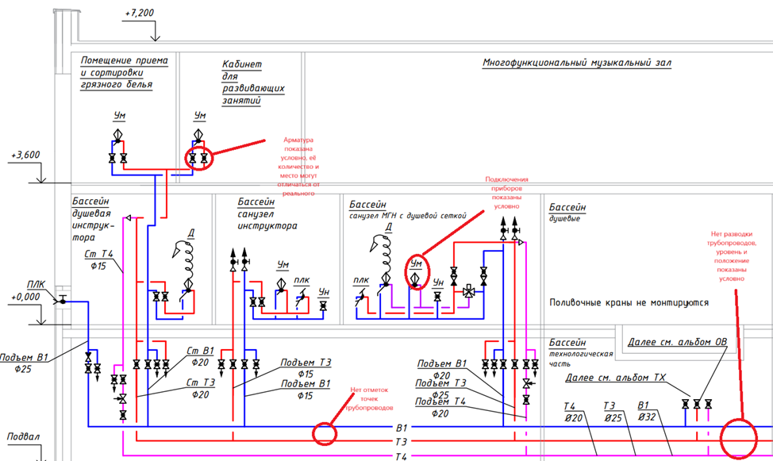
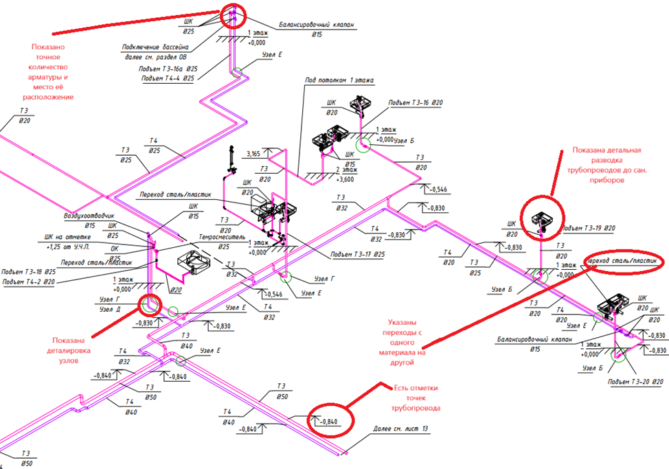
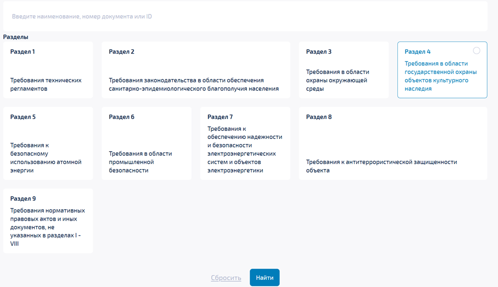

Язык строительства: как говорить на терминах и не бояться нормативки

Мы с вами рассмотрели, что должен уметь и знать инженер-проектировщик. Теперь перейдем к тому, чем он будет заниматься, и какая основная терминология ему будет встречаться.
Проектирование заключается в разработке проектной и рабочей документации на объект строительства.
Проектная документация (ПД) – это материалы в текстовой и графической формах и при необходимости в форме информационной модели. ПД обеспечивает строительство, в ней даны принципиальные решения и схемы, которые определяют основные характеристики будущего объекта.
Пример чертежа из проектной документации:

Рабочая документация (РД) ориентирована на конкретные условия стройплощадки и должна учитывать мельчайшие детали и региональные, местные особенности. Она расшифровывает проектные решения, которые заложены в ПД, и доводит их до уровня исполнителя.
Пример чертежа из рабочей документации:

Таким образом, ПД – это как меню в ресторане, в нем только описание блюда, а РД – пошаговый рецепт с подробным описанием и фотографиями.
И рассмотрим еще немного терминов, которые пригодятся нам для начала проектирования.
Объект капитального строительства (ОКС) – здание, строение, сооружение, объекты, строительство которых не завершено, за исключением некапитальных строений, сооружений и неотделимых улучшений земельного участка (замощение, покрытие и другие).
Линейные объекты – железные дороги, автомобильные дороги и наружные сети (трубопроводные сети, электросети, сети связи и др.).
Некапитальные строения, сооружения – те, которые не имеют прочной связи с землей и конструктивные характеристики которых позволяют осуществить их перемещение и (или) демонтаж и последующую сборку без несоразмерного ущерба назначению и без изменения основных характеристик строений, сооружений (в том числе киосков, навесов и других подобных строений, сооружений).
Опасный производственный объект (ОПО) – характеризуется повышенным риском возникновения аварий, техногенных катастроф и возможностью нанесения вреда жизни и здоровью людей, окружающей среде и материальным ценностям. Полный перечень ОПО Вы можете найти в Приложении 1 № 116-ФЗ.
Рассмотрим терминологию видов работ, она пригодится для понимания, что именно необходимо проектировать и какие технические решения принимать на данном объекте.
Новое строительство – это создание зданий, строений, сооружений с нуля (в том числе на месте сносимых объектов капитального строительства).
Реконструкция – изменение параметров объекта (например, высоты, количества этажей или количества частей, в случае линейных объектов), в том числе надстройка, перестройка, расширение ОКС, а также замена и (или) восстановление несущих строительных конструкций объекта капитального строительства, за исключением замены отдельных элементов таких конструкций на аналогичные или иные улучшающие показатели таких конструкций элементы и (или) восстановления указанных элементов.
Также в случае реконструкции линейных объектов изменяется класс, категория и (или) первоначально установленные показатели функционирования таких объектов (мощность, грузоподъемность и другие) или при которых требуется изменение границ полос отвода и (или) охранных зон таких объектов.
Капитальный ремонт – это комплекс работ, направленных на восстановление эксплуатационных качеств объекта недвижимости без изменения его изначальных параметров.
Снос – это процедура ликвидации старого строения путем его разрушения.
Инженерные изыскания – это комплекс работ, направленный на изучение природных условий и факторов техногенного воздействия в целях рационального и безопасного использования территорий и земельных участков в их пределах, подготовки данных по обоснованию материалов, необходимых для территориального планирования, планировки территории и архитектурно-строительного проектирования.
Очень важными элементами в проектировании является нормативная база. Рассмотрим с вами, что лежит в основе проектирования.
На сегодняшний день принято очень много нормативных документов, которым должны соответствовать готовые конструкции и коммуникации. И тенденция идет к тому, что ты не успел еще исправить замечания заказчика – как вышел новый Свод правил, в котором все по-другому.
Поэтому очень важно, чтобы у вас был руководитель, который вовремя зафиксирует по каким нормативным документам вы работаете и быстро отбивал все замечания по этому поводу.
Нет ничего невозможного, особенно если есть ГОСТ на тему твоей задумки
Рассмотрим основные документы, регулирующие проектирование:
1. Градостроительный Кодекс (ГрК РФ) регулирует в целом градостроительную деятельность. Положения, касающиеся архитектурно-строительного проектирования описаны в Главе 6 Кодекса. Эти положения необходимо изучить, чтобы понимать основы построения работы в связке проектирование – строительство.
2. Федеральный закон от 30.12.2009 № 384-ФЗ устанавливает минимально необходимые требования к зданиям, сооружениям, процессам, осуществляемым на всех этапах их жизненного цикла.
В него включены национальные стандарты и своды правил, предусматривающие требования безопасности зданий, сооружений, процессов, осуществляемых на всех этапах их жизненного цикла, применяются со дня включения таких требований в реестр требований, подлежащих применению при проведении экспертизы проектной документации и (или) экспертизы результатов инженерных изысканий, осуществлении архитектурно-строительного проектирования, строительства, реконструкции, капитального ремонта, эксплуатации и сноса объектов капитального строительства (далее - реестр требований), в порядке, установленном законодательством о градостроительной деятельности.
В Главе 3 описаны требования к проектной документации в целях обеспечения безопасности зданий и сооружений.
Этот документ больше важен для составления задания на проектирование, чтобы включить все актуальные и обеспечивающие безопасность конструкций документы.
3. Реестр требований. Национальные стандарты и своды правил, предусматривающие требования безопасности зданий, сооружений, процессов, осуществляемых на всех этапах их жизненного цикла, применяются со дня включения таких требований в реестр требований, подлежащих применению при проведении экспертизы проектной документации и всех этапах жизненного цикла объекта.
Он был введен 28 августа 2024 года и находится на сайте Стройкомплекс.РФ.
В реестр включают требования документов, которые являются предметом экспертизы ПД согласно части 5 статьи 49 ГрК (ч. 2 ст. 57.4 ГрК). Соответственно реестр больше предназначен для оценки требований экспертизы.
На картинке Вы можете ознакомиться с разделами, на которые делятся документы в реестре требований.

Федеральный закон от 22.07.2008 № 123-ФЗ «Технический регламент о требованиях пожарной безопасности» устанавливает минимально необходимые требования пожарной безопасности к объектам защиты (продукции), в том числе к зданиям и сооружениям, производственным объектам, пожарно-технической продукции и продукции общего назначения.
Для разработки проектной документации основным документом является Постановление Правительства РФ от 16.02.2008 № 87 О составе разделов проектной документации и требованиях к их содержанию, которое дает понимание о том, какое минимальное требование к ПД в части наполнения будет смотреть экспертиза.
А основные требования к проектной и рабочей документации описаны в ГОСТ Р 21.101-2020. А именно, общие требования к составу документации, правила выполнения чертежей, спецификаций и внесения изменений в документацию.
В Постановлении Правительства РФ от 17.05.2024 № 614 описаны правила формирования и ведения информационной модели объекта капитального строительства.
Создай личную нормативную закладку.
Напиши в ней все основные нормативные документы, полезные для использования. Важно проверять ее на актуальность хотя бы раз в квартал.
В целом, проектирование подчиняется строгим правилам и стандартам, которые регулируются нормативными документами:
- ГОСТ: устанавливают требования к материалам, технологиям и процедурам проектирования.
- СНиП: регулируют требования к строительству и эксплуатации зданий и сооружений.
- СП: Дополнительные нормативные документы, содержащие рекомендации и требования по проектированию и строительству.
Полный список документов необходимо устанавливать в задании на проектирование. Об этом мы поговорим с вами в следующем уроке.
Используйте справочные системы для поиска актуальных документов. Например, Актион Строительство.